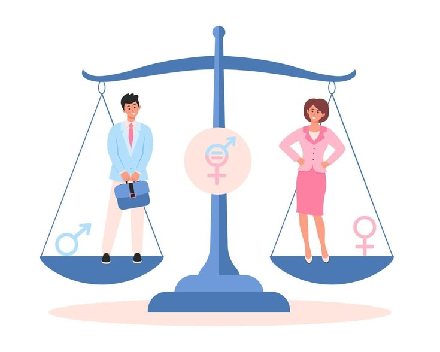

Как меняются представления о ролях мужчин и женщин в XXI веке? Разбираемся на основе опроса 30 студентов.

Это устойчивые упрощённые представления о том, как «должны» вести себя мужчины и женщины.
Биологические и анатомо-физиологические особенности организма.
Социальный пол — совокупность норм и ролей, которые общество предписывает людям.
Стандартизированный образ, упрощающий восприятие сложной социальной реальности.
Мужчинам приписывают рациональность, сдержанность, склонность к риску. Женщинам — эмоциональность, заботу, эмпатию.
Мужчина — «добытчик» в публичной сфере. Женщина — «хранительница очага» в приватной.
Деление профессий на «мужские» (сила, техника, управление) и «женские» (сервис, педагогика, забота).
Гендерные роли — не данность, а продукт исторического развития.
Жёсткое разделение ролей: мужская физическая сила — основа выживания рода, женщина — репродуктивная функция и дом.
Массовый выход женщин на рынок труда. Движение суфражисток — борьба за избирательное право и доступ к образованию.
Официальное равноправие и вовлечение женщин в производство. Но дома сохранялись традиционные обязанности — феномен «второй смены».
Цифровизация нивелировала значение физической силы. Интеллект и коммуникация выходят на первый план — формируется эгалитарная модель.
В апреле 2026 года мы опросили 30 студентов в возрасте 16–22 лет (12 юношей и 18 девушек).
💡 Среди юношей патриархальный взгляд разделяют 42%, среди девушек — только 17%.
«Любая сфера доступна при наличии навыков»
«Различия предопределяют выбор профессии»
«Да, мужчины — такие же люди»
«Мужчина должен сохранять жёсткость»
Современная молодёжь в большинстве своём поддерживает эгалитарные (партнёрские) отношения. Старые жёсткие стереотипы постепенно уступают место свободе выбора и равноправию во всех сферах жизни.
Узнай, насколько стереотипно твоё мышление. 5 вопросов — 1 минута.